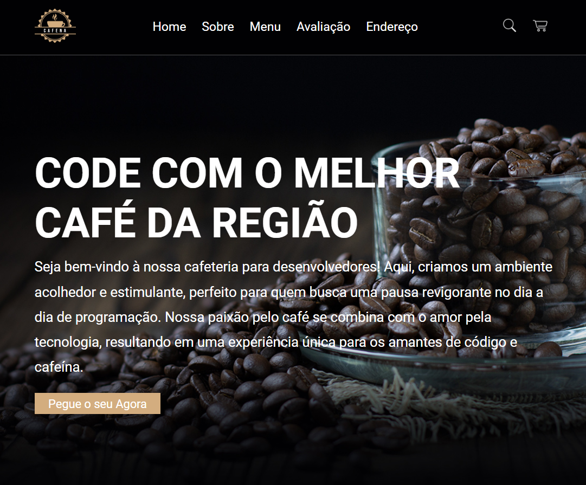
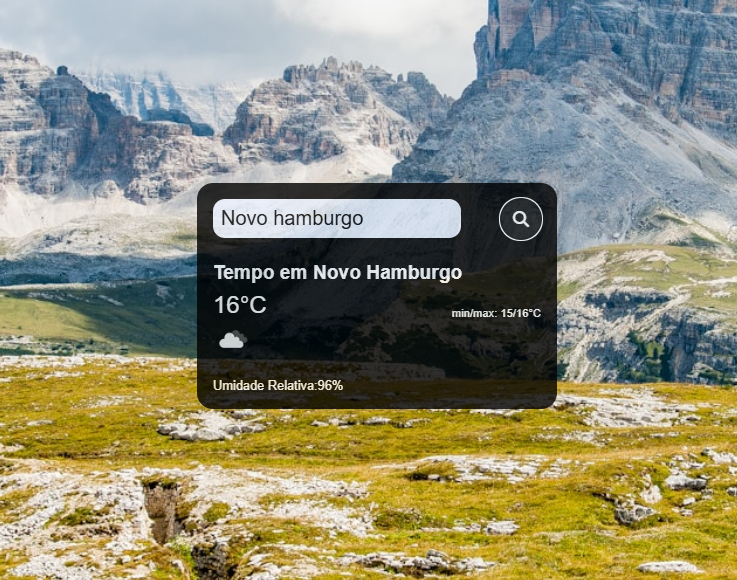
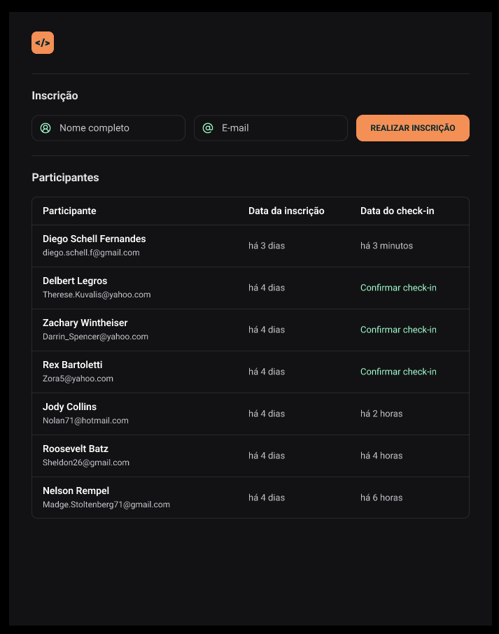

Cafeteria
Projeto mostra uma landing page para uma cafeteria projetadad para desenvolvedores.

Tempo Real
Projeto é uma pagina de pesquisa do tempo completamente funcional e responsiva

Pass In
Aplicação desenvolvida em HTML+CSS+JS para fazer cadastramento e confirmação de participantes.